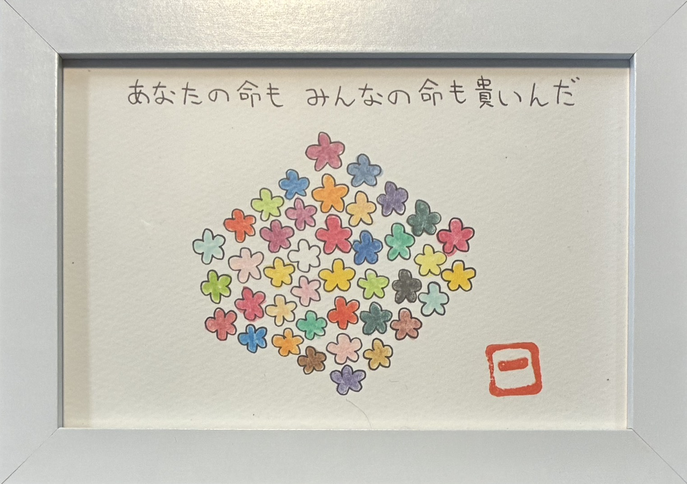
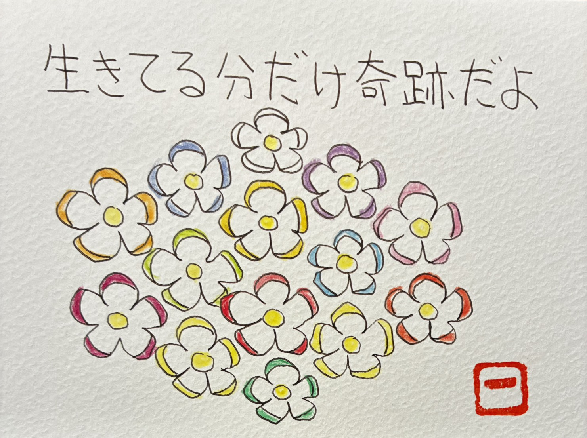
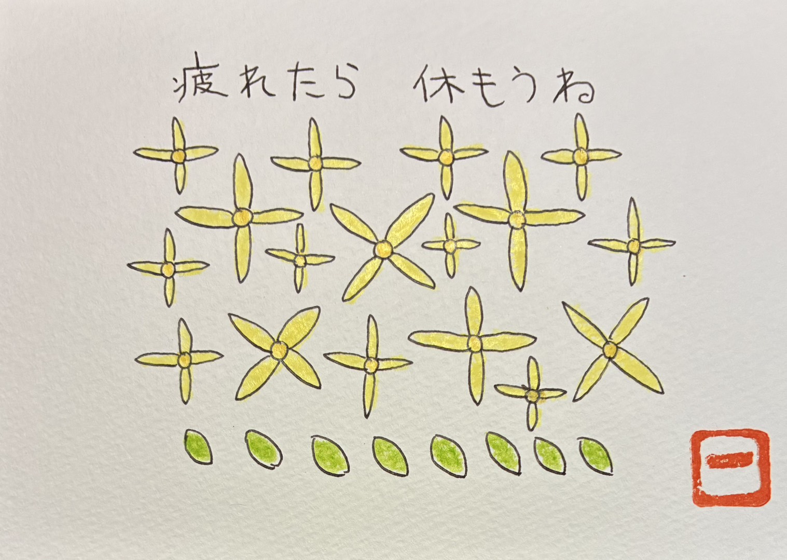
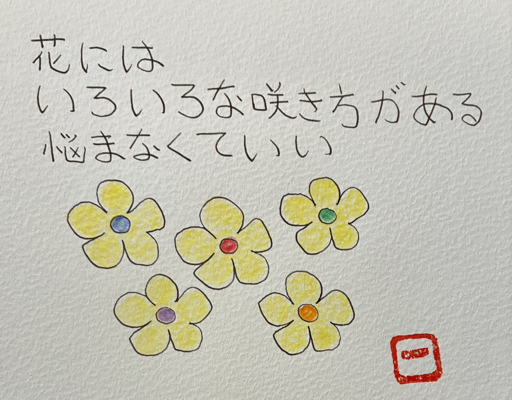
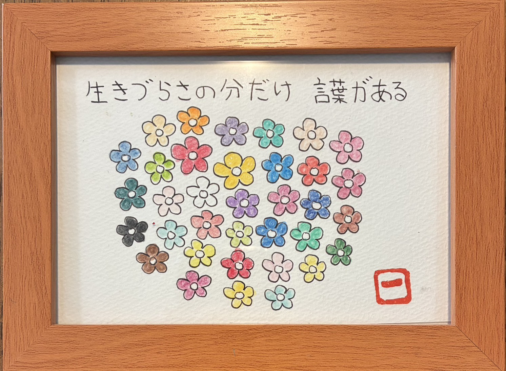

命の物語
なぜ、命の大切さを伝えたいのか。
「えことば」で伝えたいことは、
いつも一つ。
命の大切さです。
ふり返ると、
理由は四つあります。
第一章
沖縄戦の話
幼い頃、家族団欒の時間に、
両親からよく沖縄戦の話を聞きました。
学校でも、慰霊の日が近づくと、
戦争を体験した方の話を聞きました。
逃げ惑う道に、
たくさんのご遺体があったこと。
家の近くに、
遺骨を集める場所があったこと。
母方の祖父は戦争で亡くなり、
母には、父親の記憶がありません。
命を奪い合う戦争は、怖い。
二度と、傷つけ合ってはいけない。
幼心に、そう刻まれました。
命どぅ宝― 命こそ、宝 ―
どんな命にも意味があり、
命は尊いもの。
生きていること自体に、意味がある。
この想いが、すべての始まりです。

貴いんだ
第二章
会ったことのない兄
私が生まれる前に、
病気で幼くして亡くなった兄がいます。
会ったことは、ありません。
残っているのは、
一枚の遺影だけです。
それでも、両親が涙を流しながら
何度も話してくれたから、
兄はずっと、
そばにいる気がします。
兄弟みんな、兄を「一番上」だと
思って育ちました。
兄弟の仲が良いのは、
兄のおかげです。
どの命も、大事。
命は長さではなく、
どう生き抜いたかが問われる。
傷つけていい命なんて、ない。
兄が、そう教えてくれました。

第三章
看護師として
公立病院の外科病棟で、
看護師として、
がん患者さんの看護をしていました。
手術を終えて退院された方が、
しばらくして再入院し、
亡くなっていく。
その繰り返しが、つらかった。
無力感を抱えていた頃、
ある方の言葉に救われました。
「あらかきさん、
人は技術じゃない。心だよ」
末期がんになっても諦めず、
最期まで命を燃やす生き方に、
私はたくさん励まされました。
命は儚いからこそ、美しく貴い。
ありのまま、今を生きよう。
患者さんたちが、
そう気づかせてくれました。

第四章
うつの底で
37歳のとき、うつを発症しました。
職場で重い役割を担い、
悩んでいた頃、
父の死も重なりました。
絶望的な孤独感に覆われました。
光も当たらず、何も聞こえず、
何の味もしない世界。
頭が回らず、身体も重く、
過去ばかり振り返っては
自分を責めて、
日々、死ぬことばかり
考えていました。
それでも生きているのは、
妻や子どもたち、母や兄弟、
親友の支えがあったからです。
誰ひとり、
私を責める人がいなかった。
もしあの時、
一人でも責める人がいたら、
今、私は生きていません。
ある日、自転車に乗っていて、
道ばたの黄色い花に救われました。
ふと浮かんだ詩を、
書いては消し、
書いては消しするうちに、
自分を責める気持ちが
少しずつ薄まって、
「ありのままの自分でいいんだ」
という生きる力が湧いてきました。
絵は、自分の知らなかった世界に
導いてくれ、
生きる力を与えてくれます。
あの日の黄色い花が、
今も私の絵の中に咲いています。

悩まなくていい
結び
振り返って
10年以上、
希死念慮に苦しみました。
そんな私を救ったのは、
親友の言葉でした。
「いつ死んでもいいように
生きろ」
多くの出会いがあり、
悩みがあり、
言葉が生まれる。

必要な方に、
届きますように。